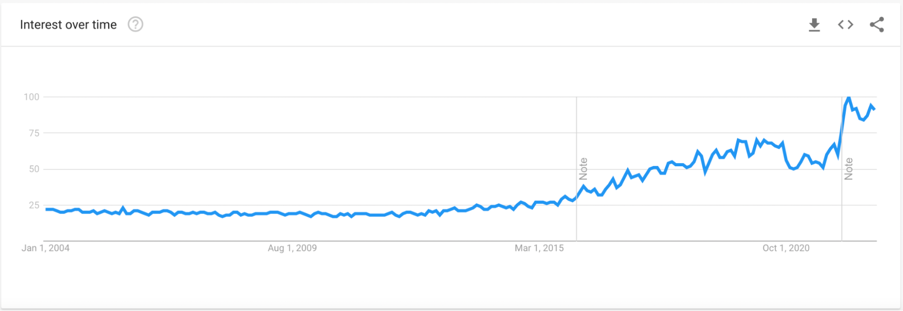

2 Reasons to Learn Python

• Why learn Python in 2023? There are many reasons, some related to career and earnings, others to personal development. In this article, I will demonstrate why learning Python should be one of your New Year’s resolutions.
1. Python Is Easy to Learn
Python is a perfect fit for a first programming language. If you are completely unfamiliar with Python or only at the very beginning of your learning journey, don’t worry! The Python programming language is very intuitive and its learning curve for beginners is relatively small
Python is used for:
- Web development (server-side)
- Software development
- Mathematics
- System scripting
What can Python do?
- Python can be used on a server to create web applications.
- Python can be used alongside software to create workflows.
- Python can connect to database systems. It can also read and modify files.
- Python can be used for rapid prototyping, or for production-ready software development.
Why python?
- Python works on different platforms (Windows, Mac, Linux, Raspberry Pi, etc).
- Python has a simple syntax similar to the English language.
- Python runs on an interpreter system, meaning that code can be executed as soon as it is written. This means that prototyping can be very quick.
- Python can be treated in a procedural way, an object-oriented way or a functional way.
2. Python Devs Are In-Demand and Well-Paid
If you take a look at Google Trends with PYTHON as a search term, you’ll notice that interest in Python has been constantly increasing over the last decade:
